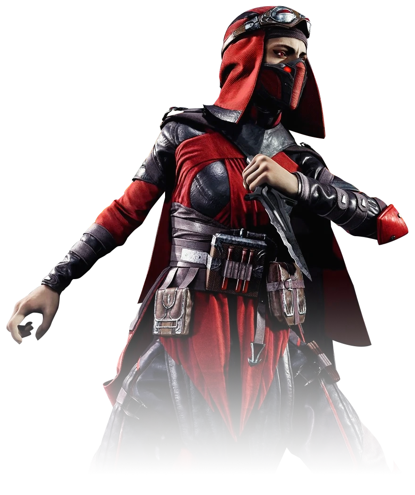
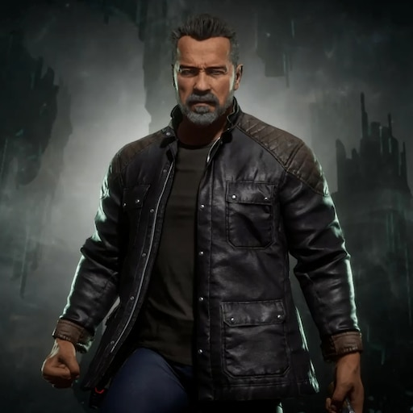

Mortal Kombat 11 - комп'ютерна гра в жанрі файтинг , розроблена американською студією NetherRealm Studios під видавництвом WB Games для ігрових платформ PlayStation 4, Xbox One , Nintendo Switch і Microsoft Mortal Kombat 11 є продовженням Mortal Kombat X і одинадцятою за рахунком грою в основній серії Mortal Kombat . Анонс ігрового трейлера вперше був представлений на The Game Awards 2018 . Вихід гри відбувся 23 квітня 2019 року. Наприкінці січня 2019 року було оголошено, що дату виходу фізичних копій гри на Nintendo Switch в Європі було перенесено на 10 травня 2019 року [7] . 17 листопада 2020 року гра вийшла на платформах PlayStation 5 і Xbox Series X .
Персонажі
Джонни Кейдж - персонаж франшизи бойових ігор Mortal Kombat від Midway Games і NetherRealm Studios. Представлений в оригінальній грі 1992 року, він є зіркою бойовиків із великим досвідом бойових мистецтв.
 Скарлет — персонаж серії файтингів Mortal Kombat . Маг смертоносного мистецтва Магії крові , одна з прийомних дочок імператора Зовнішнього світу Шао Кана і служить його особистим охоронцем.
 Терминатор T-800 (англ. Terminator T-800) — персонаж фильмов Терминатор и всех его продолжений. Появился в Mortal Kombat 11 как DLC персонаж.
Сюжет
Через деякий час після поразки Шиннока від рук Кейсі, Рейден мучить загиблого Старшого Бога в пошкодженій палаті Джинсей. Бог Грома, тепер із більш темною особистістю через ушкодження Джинсея, оголошує Шинноку, що він більше не буде милосердним і знищить усіх ворогів Земного царства, перш ніж вони зможуть атакувати. Рейден загрожує йому, говорячи, що він буде першим. Шиннок нагадує йому, що він не може вбити старшого Бога, але Рейден заявляє, що є доля гірша за смерть і обезголовлює його. Рейден каже відрубаній, але все ще живій голові Шиннока, що доставить його Лю Кенгу до пекла як попередження і телепортується. Охоронець часу, Кроніка, з'являється в палаті, роздратована на Рейдена за порушення балансу часу, знищивши Шиннока. Вона підходить і каже йому, що дуга Всесвіту згинається з її волі і що це лише питання часу. Втомлена від непокори землян, Кроніка принесе лад у Всесвіт будь-якими необхідними засобами.